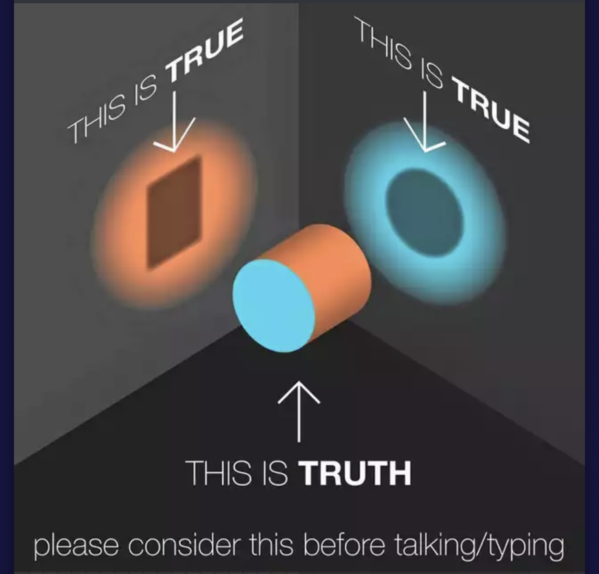

Every clinical model, diagnostic framework, and philosophical principle underlying the work of ICU-1111. The PAST Framework identifies the patterns. The DEAL Framework maps the path. The Capacity Framework explains the mechanism. The Cylinder reveals the geometry of truth.
Every pattern that shows up in relationships, health, achievement, and self-worth is not random. Not a personality flaw. Not a character defect. It is the predictable output of an identity that was never fully formed — or that was formed under conditions that required distortion in order to survive.
The work of ICU-1111 is not symptom management. It is identity completion. The goal is not a better-functioning broken system. The goal is a fully formed self — one that does not need to prove its worth, borrow its worth, or perform its worth.
The Mercy Lens is not a philosophical stance — it is a clinical necessity. Neither extreme can receive the truth as a confrontation. Mercy is the only delivery mechanism the truth can travel through when someone's entire identity structure is built to keep it out.
I must generate proof. The workaholic generates it through output. The self-authorship extreme generates it through narrative control. The Audition — performing for love instead of receiving it — is performance-based worth in relationship form. It lives in the future. You are always rehearsing. Never present. The proof is never enough.
I must collect proof from others. Approval, belonging, acceptance — the currency. The people-pleaser collects through agreement. The empathy extreme collects through belonging. The Pairing is two people trying to extract worth from the same depleted source. It leaves every time the person does.
I do not generate it. I do not collect it. I simply am it. Present. Not performing for the future. Not managing what happened in the past. Just here. Structural worth only exists in one place: the present moment. This is the destination of the entire framework.
A fully formed identity does not choose between knowing what you want and feeling what others need. It integrates both — through a boundary that discerns rather than defends.
Know what you want — author yourself.
The capacity to generate identity from the inside. To know what you feel, what you want, what you value — not because someone told you, not because it keeps the peace, but because you know yourself.
Not just entitlement — a sealed narrative. They are the author of their story even when evidence proves otherwise. They are not just the center of the universe — they are always right. Being wrong, in their mind, is being worthless. Being emotional is being weak — which is being worthless. So the walls go up. Not because they are strong. Because they cannot afford to find out they are not.
They will destroy relationships, gaslight people they love, and rewrite reality itself — all to avoid feeling worthless for thirty seconds.
Power emotions only: confidence, anger, pride, certainty. Soft emotions — sadness, fear, grief, vulnerability — are not permitted. They get converted: sadness becomes anger, fear becomes contempt, grief becomes blame. This is restriction, not regulation.
Because they assign moral weight to their own emotional range, they apply the same verdict to others. When the empathy extreme expresses sadness or hurt, they read it as moral deficiency. Not inconvenient. Wrong.
Shame cannot be processed — it converts immediately to blame. The apology, if it comes, is structured to restore their image — not repair the person they hurt.
A membrane, not a wall — discerning and open.
Not the rigid refusal of entry, but the intelligent, alive, selective permeability that distinguishes self from not-self. The cell membrane is the clinical analogy: selectively permeable, responsive, maintaining integrity without isolation.
The integrated person can feel shame, hold it, evaluate it, and either own it or set it down — without it destroying them or being weaponized outward. That is what a functioning boundary does with shame.
Shame metabolized → accountability.
Shame ejected → blame.
Shame absorbed → identity.
You are not the greatest. You are not the worst. You are a person — among people. Neither the most important nor the least. Neither always right nor always wrong. Just a person who takes up the right amount of space and knows it.
Both distortions are grandiose — just in opposite directions. One is the sun. One is the black hole. Both have the same gravitational pull on everyone around them.
Feel deeply without disappearing.
The capacity to move toward another's experience without losing the thread back to your own. Resonance without absorption. Presence without dissolution.
No authored preference exists when others are present. "Whatever you want" is not generosity — it is identity dissolution. Resentment accumulates because unspoken, unformed preferences were not divined by others. When asked their opinion, they genuinely do not know. They need to be told what to want.
Because they have echoed others so long, no one knows what they actually prefer. Everyone assumed they had no preferences — because they never surfaced them. Invisible to themselves first. Then invisible to everyone else.
Chronic apology for existence: Not for something done, but for being. Sorry to bother you. Pre-emptive shrinking before anyone signals inconvenience.
Cannot receive a compliment cleanly: Thank you feels like a lie. The compliment triggers an explanation — a case for why the good thing might be warranted. The compliment is deflected because accepting it would require believing they deserve it.
Emotional exile: Taught their feelings were wrong, they buried the access point. Cannot answer "how do you feel?" — not from absence of feeling but from exile from it.
Arrives and is immediately expelled. Cannot be held, processed, or integrated. Converts to blame, defensiveness, counter-narrative. The membrane is one-way — only self-affirming information enters. What looks like confidence is often a shame-processing failure.
Does not get ejected — absorbed wholesale and permanently. No authored self to evaluate it against — it floods in and settles. They do not feel shame when wrong — they are shame. Every criticism simply confirms what was already believed.
The PAST Framework is a diagnostic system — not a judgment. It identifies the four patterns that emerge from incomplete identity. These patterns are survival strategies that outlived their usefulness. Each one is the self's attempt to manage the root wound — I am worthless — in the absence of structural worth.
Not chemistry or compatibility — complementary wound management. The self-authorship extreme assigns blame outward. The empathy extreme receives blame inward. Neither is choosing consciously. Both are choosing by wound. One needs someone to hold the blame. One needs somewhere to put it. The relationship functions as a shared reality-management system. It holds until the Squeeze.
When love was conditional in childhood, we learn to audition. Not to show up — to perform. To give from fear rather than fullness. The Audition is performance-based worth in relationship form. Every act of giving is also an act of earning. Presence is never available because you are always rehearsing. There is no performance that secures worth permanently.
Under pressure, we do not rise to our intentions — we fall to our patterns. The Squeeze is the moment when the defense system fails and reality breaks through. Crisis, conflict, illness, loss, rupture. The distortion cracks. The Squeeze is not a failure. It is an initiation. It is the moment the framework becomes available — because the distortion finally cracked enough to let something true in.
You cannot give structural worth to someone else until you stop performing it and stop borrowing it. The tank has been running on performance-based worth and borrowed worth — never on structural worth. It was never full. What pours from a tank that runs on performance is more performance. The work of filling the tank is not self-care as commodity — it is identity completion.
The DEAL Framework does not prescribe the same action for both extremes. The instruction is the same — but what that instruction requires looks completely different depending on which direction you are coming from. This is what makes it clinically precise rather than generically motivational.
Every defense mechanism in the PAST Framework is resistance to reality. D is the intervention for both extremes — from their side of it.
Self-authorship extreme: Let it land. You were wrong. The narrative needs rewriting. You are still here. Being wrong did not kill you.
Empathy extreme: See yourself. You have been absent from your own life. People do not know you because you never showed up to be known. Being seen will not kill you either.
This is where the shame lives — and where the pendulum swing happens. The overcorrection. The unfamiliar territory. This is why the work feels worse before it feels better — and why most people quit at this stage.
Self-authorship extreme: Sitting with "I was wrong" without converting it to blame. Thirty seconds of worthlessness that do not end them.
Empathy extreme: Having a preference in public. Saying no. The people around them will say they have changed. They are right. The word is not selfish. The word is present.
Where the overcorrection starts to calibrate. Where the plain true thing becomes available. You were wrong and you are okay. You exist and you are allowed. Neither the greatest nor the worst. Just a person among people.
Not positive thinking. Accuracy. The distortion was inaccurate in both directions. A is the return to what is simply true — without the distortion in either direction.
Not an achievement — a return. Not to the original position. Not to the opposite extreme. To the middle. Structural worth. Just being. Present. Not performing for the future. Not managing what happened in the past.
The integrated person at L can be wrong without it meaning they are worthless. Can be rejected without it erasing them. Can hold shame and evaluate it — own it or set it down — without it destroying them.
The pendulum has to swing the other way before it finds center. Integration is not a straight line from one extreme to the middle. The nervous system does not work that way. The identity does not work that way. The wound does not work that way.
For the empathy extreme: The pendulum swings toward self-authorship first — sometimes dramatically. Must overclaim before accurately claiming. The people around them will say they have changed. They are right. The word is not selfish. The word is present.
For the self-authorship extreme: The pendulum swings toward empathy first. Must feel things they have been deflecting. Must say "I was wrong" out loud and find out they are still standing. It will feel like collapse. It is the first honest thing in years.
Most people quit at E — Embrace Discomfort. They think the discomfort of the swing means they are doing it wrong. The discomfort of the swing is the doing.
A horizontal cylinder lies at the corner where two walls meet. Light hits the circular end and casts a circle on one wall. Light hits the length and casts a rectangle on the other. Same object. Different angle. Both shadows one hundred percent accurate.
Neither person is lying. Neither shadow is the whole truth. The cylinder was there the entire time.
Mercy: The other person's shadow is real to them — not a lie, not a distortion for convenience. Just an incomplete angle on the same object.
Grace: Accepting that neither shadow is the whole cylinder — including your own. Staying curious about the cylinder instead of going to war over the shadows.
Truth: Not one person's shadow winning. Not the louder shadow or the older shadow. The cylinder itself — which neither person can see in full from where they are standing. That is not failure. That is the geometry of perspective.

Seeing the cylinder does not obligate anyone to change. That is where accountability enters — the piece that makes the Cylinder Principle applicable to adults rather than simply philosophical.
Takes credit enthusiastically — success, achievement, the win are fully authored. But accountability, the mirror image of credit, is nowhere. You cannot be the author of your victories and a bystander to your damage. That is not authorship. That is performance-based worth wearing the costume of authorship.
Absorbs blame readily — sometimes before it is assigned. But credit, the mirror image of accountability, lands nowhere. A compliment gets deflected. An achievement attributed to luck. They cannot receive what they earned any more than the self-authorship extreme can own what they caused.
Maturity is not acting a certain way. Not reaching a certain age. Not checking certain boxes. It is the expansion of what the system is capable of — emotionally, physically, spiritually, relationally. Regression is the contraction of a capacity under load.
Capacity stems from nature — raw material of temperament, sensitivity, innate wiring — AND nurture — what gets built, stunted, or never started. Neither is destiny. You cannot expand into what you have never witnessed. The nervous system learns by witnessing, then practicing, then integrating.
The behavior is always the ceiling of the current capacity. Many adults are operating at the emotional capacity of the age when the wound occurred. The forty-year-old who cannot be wrong without collapsing may be operating with the shame-processing capacity of an eight-year-old who was humiliated and never recovered.
Modeling (seeing it done), safety (practice without punishment), repetition (enough attempts the new pattern becomes available without effort), integration (the point where it stops being a skill being tried and becomes something simply inhabited). A capacity is genuinely yours when it remains available under stress.
Each stage has different available capacities. The teenager's feelings are adult-sized — the container is not yet. This is where many emotional wounds originate: adult experiences, adolescent capacity to process them.
"Not more controlled. Not more disciplined. Not more compliant. More capable — of more things, with more people, in more circumstances."
The person who could not sit with being wrong without collapsing — and now can. That is not willpower. That is a developed capacity. The system learned something it did not know before. The container got bigger. The ceiling got higher.
The quadrant is a diagnosis — not a sentence. Both willingness and exposure are current states, not fixed traits. The Squeeze is often the catalyst that creates willingness where none existed.
Full conditions for capacity expansion. The person wants to change AND has seen it modeled. This is what ICU-1111 creates. Begin the work directly.
Genuine desire to change, but no map. Willingness curdles into frustration and self-blame. Motivation is not the problem — they have all of it.
Has seen it done. Cost of changing exceeds cost of staying. Sealed narrative is too load-bearing to rewrite. Exposure is not the problem.
Never seen it and no interest in developing it. Most defended position — because the wound underneath is deepest. Neither condition is yet present.
When self-authorship and empathy are integrated through a living boundary, identity is no longer performed for approval, earned through suffering, or given away in the name of love. It is simply inhabited. Structural worth. Just being. Present.
A 30-minute discovery call to map your patterns and identify where your identity system is drifting — and where it's ready to expand.